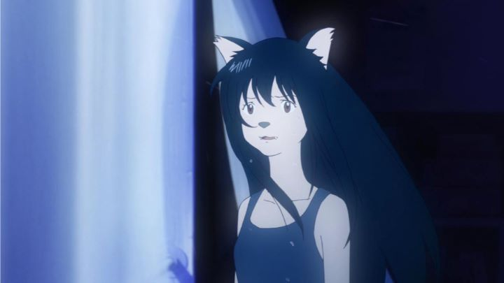

Mamoru Hosoda has made some fantastic films already. Ever since "The Girl Who Leapt Through Time" and "Summer Wars," he's been classified as the next "Miyazaki." Of course, that's not really fair: his work is entirely his own, and it's an insult to both directors to compare them so closely. In particular, Hosoda seems to have a pattern of depicting young, innocent, pure love in his main characters in fantastical circumstances, but in a different way than what Makoto Shinkai would, keeping in mind certain concepts of filmmaking to ensure his work is enjoyable to watch as a movie. But where his past films had simple romance thrown into the story as a "part-of-life" scenario for teenagers, "Wolf Children" takes it one step further, forming the entire story around the love and relationship, and the family that comes of it, between a woman and a wolfman, as if to give a middle finger to fans of the "Twilight" book series (which was very popular around the time this film was released) and say "this is how to do human-werewolf romance properly."Indeed, this is a fantastically realized love story, and is romantic to perfection in the first several minutes. Young Hana is a hard-working University student who happens to notice a mysterious man taking notes in her class. When learning that the man wasn't a enrolled student but simply wanted to learn, she takes a liking to him and offers to help him take books from the library and continue studying in class. Eventually, the man admits his secret, that he is half human and half wolf, although he is able to control his wolf side and when he changes most of the time. Not deterred, they make love that very night, leading to the first of two young children they raise.This is the biggest issue I have with the movie, which I was worried about since when I first heard the film's premise. Hana and her boyfriend (they never clearly get married) are truly in love with each other, a love that couldn't be more pure, more romantic, more true. But Hana was a hard-working student, and the parental side of me wants to scold her for giving that up to raise a family so young. What's more, the brief scene that suggests they make love has the man in his wolf form as they begin, suggesting a form of bestiality that I was more than a little uncomfortable with, despite how poetic the image and the dialogue was at the time. Tragically, the man is found dead early into the film, and is disposed of in a manner to make it one of the saddest moments in anime, leaving young Hana as a single mother, raising two children on her own, who also happen to be half-wolf (girls might think twice before saying they are on "Team Jacob" now).Despite the obvious shock and sadness Hana must have felt being thrust into such a responsibility on her own, she smiles through it and perseveres, a way to life taught by her grandfather. When the children Ame and Yuki get hungry, get sick, turn into wolfs at inopportune times, when they howl, when they want to go outside, when they want to go to school, when money is tight, and when they want to learn more about their unusual condition, Hana is all alone, but smiles to keep them from worrying like a good mother should (the constant smiling in times of grief and struggle does make me feel uncomfortable for various reasons, but it's hard to suggest any other alternative in her situation). After child-support and neighbors get suspicious of her, she flees with her children to a new home in the countryside, where they try to grow their own food and take advantage of the cheap land and far distance from the rest of society. Of course, she has a terrible time until the local farmers help teach her how to grow her own food and adapt to the new life, showing that community is tighter there than the over-populated city. As Ame and Yuki do grow older, we see them inevitably decide how they want to continue to live their lives, either as wolf or as human, and the journey to those decisions add to the emotional connection. As a spoiler, the film takes place during almost two decades of time, so expect Hana to say goodbye to at least one of her children much earlier than she imagined. Visually, the environments look incredible, animated with detail while keeping a hand-painted quality to them. Character animation is a bit weaker: it's clear that early scenes when many people are walking in the background use shortcuts and use computer animation for those extra people. Most people won't notice, but it is frustrating that they resorted to that here. The main characters are otherwise designed and animated not too differently from his past works, but the transformation scenes of the father, and the adorable cuteness of the wolf children, make the film unique. The music score is as strong as you could hope for, and does its job during the emotional moments. The English dub is also as perfect as it could be in conveying emotion where required, although many people argue the sub is still better in this case for being more subtle."Wolf Children" doesn't have the plot holes or strange decisions that Hosoda's other work has, but I feel uncomfortable watching it. I'd compare the raising of this family alone to that of "Grave of the Fireflies"... in fact, they are almost identical except for a much more hopeful ending here. It's a gut-punch made all the worse because of the incredible highs and lows, providing more range than any other film I've seen, but killing the viewer on the inside when jumping from a scene of children's laughter to a scene of a mother's worst fears. I hesitate to call the film "entertaining" because of this, it simply cannot be watched without a tissue box and requires time afterwards to recover.As strong as the emotional impact is throughout the movie, it's just not easy to watch Hana struggle to persevere to take care of her family, and the normal facts of life in the movie are both inspirational and depressing. Because of all that, I think this is Hosoda's best work, but also my last choice to watch again. If "Leapt Through Time" had the better story and "Summer Wars" had the entertainment value, "Wolf Children" has the heart, but in film, heart only works if you are able to walk out without being completely destroyed on the inside. Even still, this is a drama and romance that all mothers should see, if not all people. This might be the most powerful film Hosoda ever makes.
- "Ani" More reviews can be found at : https://2danicritic.github.io/ Previous review: review_Wizards Next review: review_Wolfwalkers